How do the lagged and lagless demand forecasts respond to injected load shifts and level changes, and how does the wind forecast compare with its references?
A forecast that mixes lagged and lagless heads (K2-S1) was in none of the eight scenarios
meaningfully worse than the lagless forecast when we injected load shifts into its lags. The
pooled neural network that was never trained on shifted lags (A-pool) is the one that suffers. At
the wind farms, member_plain is level with research default 2 (the interval includes zero).
The page shows wind reference contrasts, a 14-day wind chart, real-event charts, and eight injected scenarios on stored demand neural networks. The real-event charts add the actual with the normal running arrangement (NRA) restored, and the surprise inputs. Experiment 468 holds the earlier charts. Nothing was fitted: every neural network forecasts from stored weights.
A scenario shifts one donor Primary's lags by 1, 2, or 3 times its lag spread. The lag spread is the standard deviation of the Primary's 24-hour change in power before 2025-10-01. The shift lasts 1, 3, or 14 days. A load shift leaves the target alone, and a genuine level change moves the target too. Mirrored scenarios subtract the same energy from up to two neighbours. Each scenario runs on 16 donors and 5 test months (80 clusters). The scored rows are the donor's rows whose lags fall inside the event. The clean actual is the actual without the injected shift.
The page compares five forecasts. They are the lagless neural network (LL, which reads no lag), S1 (a lagged neural network trained on injected shifts), B-mix (a 50/50 mixture of a lagged and a lagless head), K2-S1 (a mixture of two S1 and two lagless heads), and A-pool (experiment 425's arm A, a pooled plain neural network trained on real lags only). Experiment 470's assembly winner is not shown. The scenarios are numbered 1 to 8, and "S1" always means the S1 neural network. The signed-MW six are the six Primaries whose power is signed in MW, and the MVA-only eight are the eight Primaries recorded only in MVA. D15 and D18 are two Primaries that are reported separately.
Scenarios
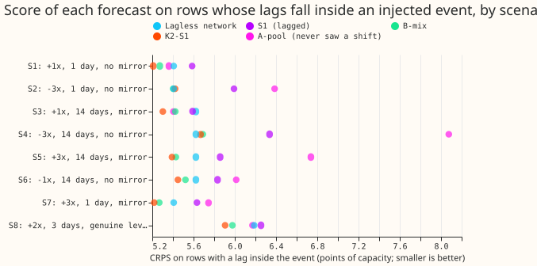
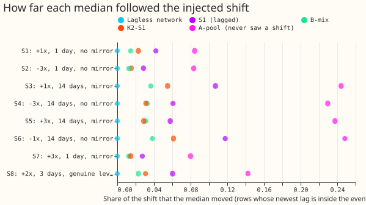
- Scenario 1 to 8 are defined by shift size, duration, and mirror. Scenario 1: +1x, 1 day, no mirror. Scenario 2: -3x, 1 day, no mirror. Scenario 3: +1x, 14 days, mirror. Scenario 4: -3x, 14 days, no mirror. Scenario 5: +3x, 14 days, mirror. Scenario 6: -1x, 14 days, no mirror. Scenario 7: +3x, 1 day, mirror. Scenario 8: +2x, 3 days, genuine level change.
- The neural networks barely followed the shift. On rows whose newest lag is inside the event, the median moved by 1% to 6% of the shift for K2-S1, 1% to 4% for B-mix, 3% to 12% for S1, and 8% to 25% for A-pool. The lagless neural network moved by 0.
- A-pool is harmed by a large negative unmirrored shift. In scenario 4 its CRPS is 8.08 points of capacity against 5.62 for the lagless neural network and 5.67 for K2-S1. Its q95 covers 72% of actuals (nominal 95%), and its q05 covers 1.0% (nominal 5%). K2-S1 minus A-pool is -2.41 points (interval -3.10 to -1.73 at the Bonferroni level for 40 contrasts, 99.875%).
- In scenario 5 (+3x, mirror), the mirror left A-pool over-confident on the lower side. Its q05 covers 16.6% of actuals and its q95 covers 97%.
- S1 is worse than the lagless neural network in scenarios 2 and 4. The contrast is +0.58 points in scenario 2 and +0.71 in scenario 4. K2-S1 minus lagless is -0.20 in scenario 1, -0.32 in scenario 3, and -0.28 in scenario 8, and each excludes zero at the Bonferroni level. K2-S1 cannot be told apart from lagless in the other five scenarios.
- Absolute scores are close for the lagless network and K2-S1. In rows with a lag inside the event, CRPS in points of capacity is 5.4 (1-day scenarios) to 6.2 (scenario 8) for lagless, and 5.2 to 5.9 for K2-S1. The row counts are 146,975 (1-day), 994,340 (14-day), and 332,691 (scenario 8).
- The ranking differs between the signed-MW six and the MVA-only eight. In scenario 4, K2-S1 and the lagless neural network score 3.92 and 3.99 at the signed-MW six and 4.95 and 4.96 at the MVA-only eight. A-pool scores 6.46 and 6.95. B-mix is lowest at the MVA-only eight (4.94 against 4.95 for K2-S1). The lagless neural network leads at D15 and D18 (13.31 against 13.90 for K2-S1).
- K2-S1's band widens by under 2% inside unmirrored shifts. Its 90% band is 27.9 points wide inside scenario 4 and 27.6 before the event. The widths are 28.1, 28.1, 27.9, and 27.7 points in scenarios 1, 2, 4, and 6. The band covers 85% of actuals inside scenario 4 rows (nominal 90%). The lagless neural network's q95 covers 87% to 88% of actuals in scenarios 1 to 7 and 84% in scenario 8.
- Widening by 1.15 does not change the ranking, except in scenario 2. Experiment 454's widening
is stored beside every raw score (
crps_by_scenario_widened.csv). In scenario 2, the lagless neural network and B-mix swap places.
Example forecasts
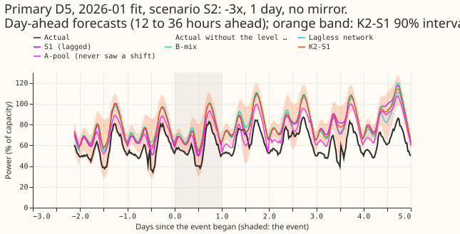
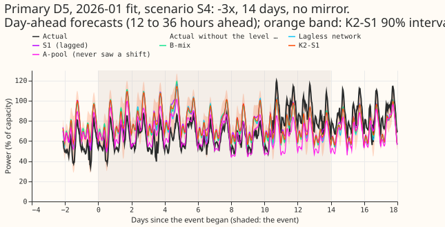
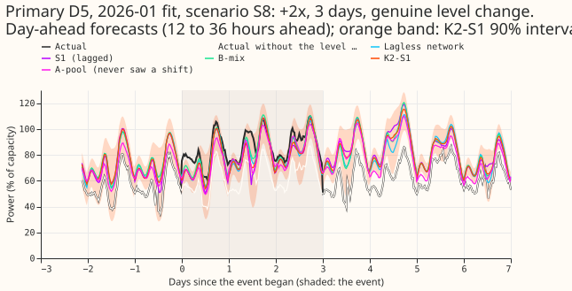
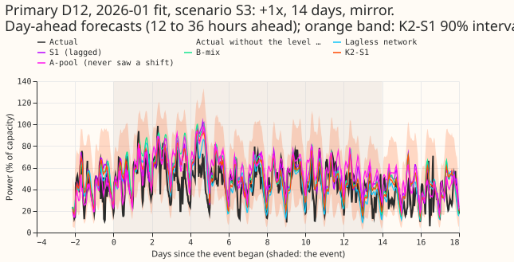
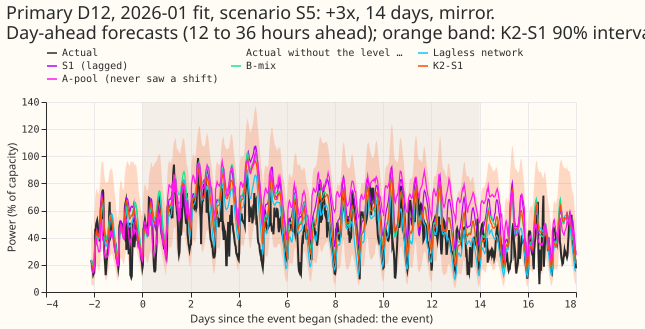
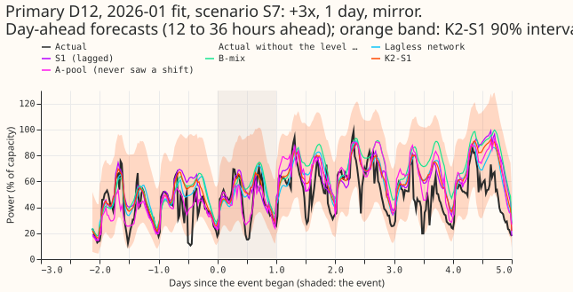
- D5 is one of the signed-MW six and D12 is one of the MVA-only eight. All six charts show day-ahead forecasts (12 to 36 hours ahead).
- A-pool follows the shift. In scenario 4 its median sits below the others throughout the event, while the other four medians stay near the clean actual.
Real events with NRA, lags, and surprise
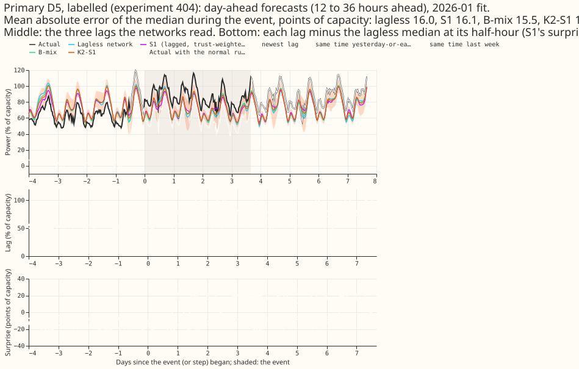
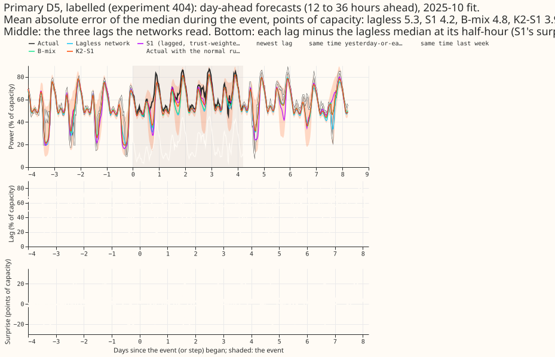
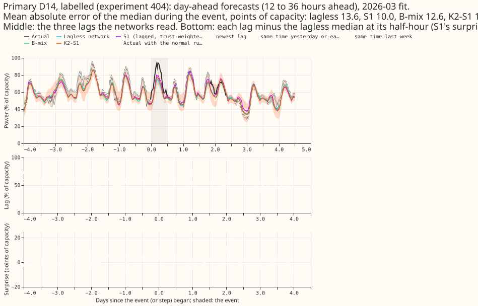
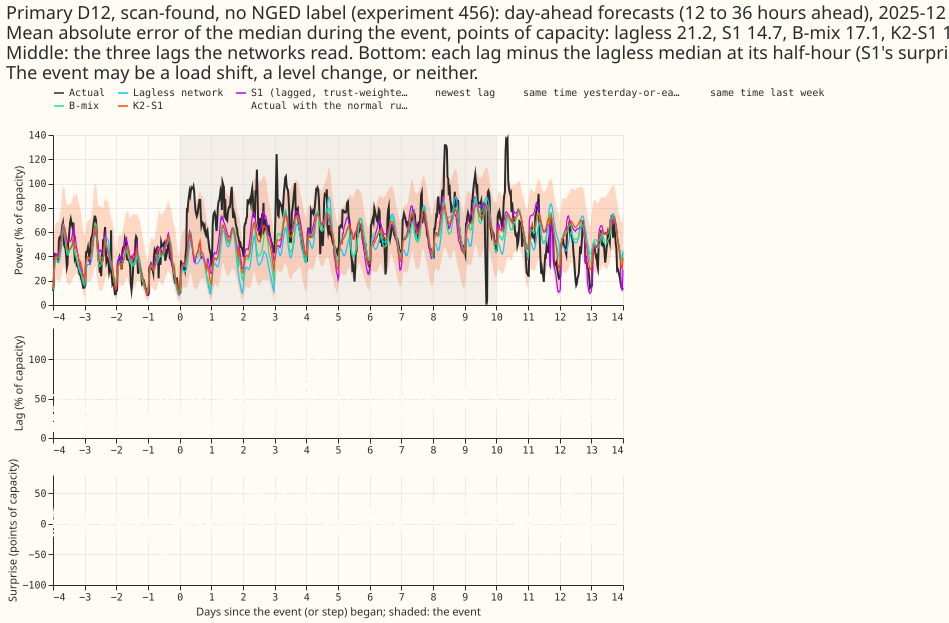
- Each chart adds the NRA actual, the lags, and the surprise. The NRA actual is drawn for labelled events only. The chart shows the three lags each neural network reads, and each lag minus the lagless median at its own half-hour (the surprise that S1 reads).
- Surprise is large during real events. The largest absolute surprise on a lag inside an event is 22, 35, 31, 36, 11, and 21 points of capacity at the six labelled events and 88 at the scan-found D12 step.
- Caveat. NGED's labels are incomplete, so the scan-found D12 step may be a load shift, a level change, or neither. Rows with no labelled event may hold events no label covers, so the injected scenarios sit on a series that is not event-free.
Wind reference contrasts
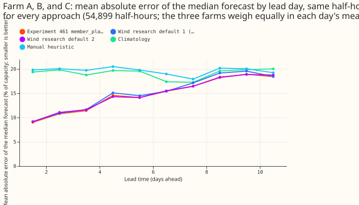
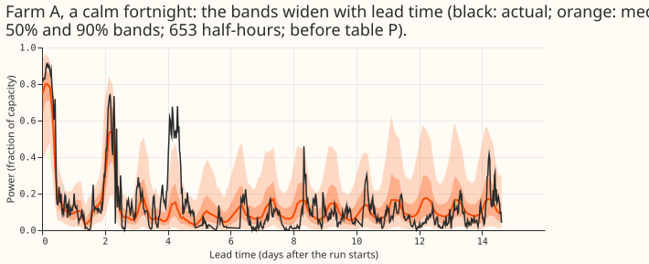
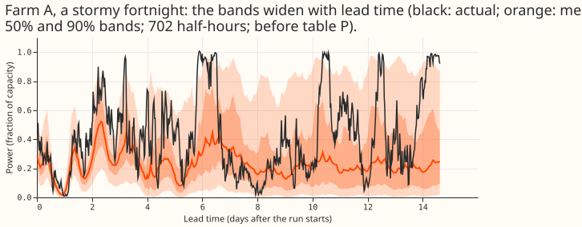
member_plainbeats research default 1 and is level with research default 2. Each contrast is experiment 461'smember_plain(p99.9 capacity, after table P, the correction fitted to 24 to 240 hours) minus a reference, in points of the p99.9 capacity, over 54,899 half-hours and 11 months, month-block bootstrap at 98.75% (Bonferroni count 4), minimum detectable effect in brackets. Research default 1: -0.41 (-0.79 to -0.04; 0.52). Research default 2: -0.05 (-0.18 to +0.09; 0.18). Climatology: -4.72 (-6.25 to -3.24; 2.04). Manual heuristic: -5.35 (-7.06 to -3.71; 2.23). In the 24 to 36 hour band (3,270 half-hours) the contrasts are -0.24, -0.05, -12.71, and -12.80.- Absolute errors are 14.3 to 19.7 points. The mean absolute error of the median, in points of
capacity, is
member_plain14.33, research default 1 14.74, research default 2 14.38, climatology 19.06, manual heuristic 19.68. The gain over research default 1 is smaller than the contrast's minimum detectable effect. - Research default 2 has the lowest error at two of three farms. It has the lowest error among the references at Farm A (14.31 against 14.78 for default 1) and Farm B (15.31 against 16.03), and not at Farm C (13.50 against 13.37).
- The 14-day chart uses
member_plainbefore table P. Table P is fitted to 24 to 240 hours. The 90% band covers 92% (calm fortnight) and 83% (stormy fortnight) of Farm A's half-hours.
Predictions
- P1 did not hold. The first-day cut was not made, so rows pool the whole event. A-pool moved by 8% to 25% of the shift, not at least 50%. The predictions for K2-S1 (under 50%) and the lagless neural network (under 5%) held.
- P2 did not hold. On the genuine level change (S8) the medians of K2-S1, S1, and A-pool moved by 3%, 6%, and 14% of the shift, so none followed the new level.
- P3 held in part. The K2-S1 band was wider inside unmirrored shifts by under 2%, and its coverage stayed above 80% (83% to 87%).
- P4 held at two of three farms. The figures are in the wind bullet above.
Not done, and caveats
- Curtailment cost at f = 0.9, 0.75, and 0.5 is not computed, because the node-plus-generators machinery takes a whole month of computing per series and the injected worlds replace one Primary's forecast only.
- The 12 to 36 hour band, a minimum detectable effect for the demand scenarios, and a run with and without the largest scenario are not computed. Demand intervals are cluster bootstraps over 80 (month, donor) clusters.
- Recipients of mirrors are forecast but not scored here. Row classes by newest lag are in
crps_by_scenario_and_class.csv; in scenario 8 the rows classedbeforeandaftermix shifted and unshifted targets, because the class follows the lags only. - A shift on an MVA-only Primary is clipped at zero, so its recorded size can overstate a negative shift.
- The 14-day chart is wind only, because demand and solar forecasts end at 240 hours.
Checks
- Self-test passed. The no-shift forecasts match experiment 454's stored cells to 7.6e-05 and experiment 425's stored arm A to 6e-06 (capacity fraction), in every month.
- The stored neural networks were refitted monthly. Cleaned data and the D15 and D18 split come with the stored forecasts.
- Median minus mean forecast: not computed, because no mean forecast is scored.
- Triggers fired: none.
- Production training load. K2-S1 needs three S1 networks and three lagless tables per refit, A-pool five pooled networks.
- Reviews: a fresh Sonnet agent reviewed the code before the first scored run; three findings were fixed (non-finite actuals in the 14-day pick, row-alignment asserts, an origin check). The reference heuristic keeps experiment 303's definition.